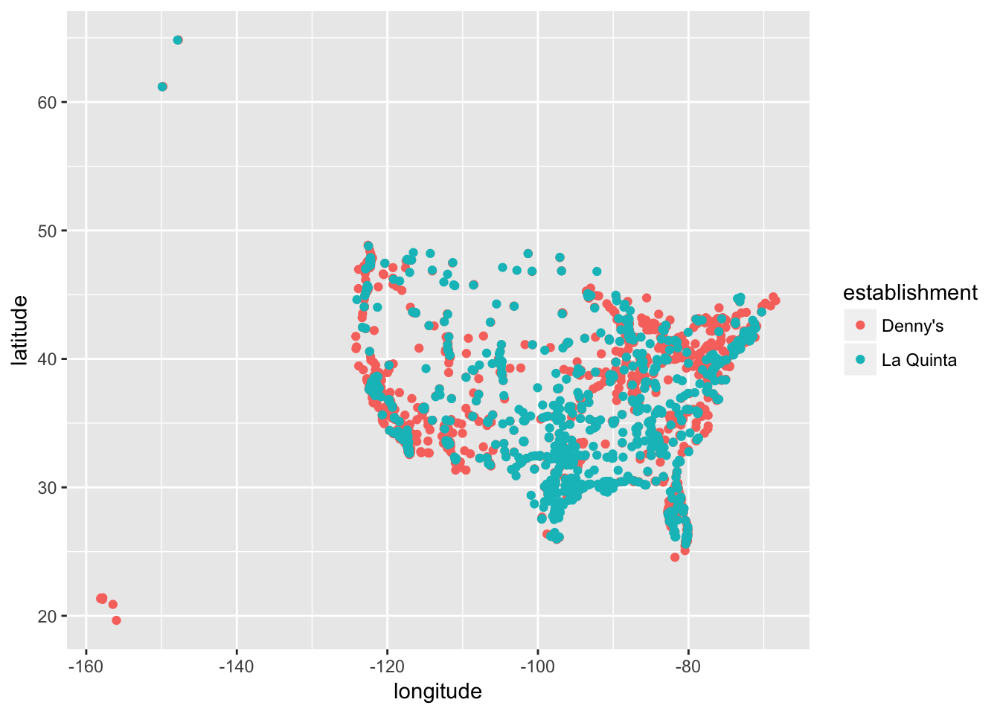

Chapter 7 Exercises
Exercise 1: What are the dimensions of the Denny’s dataset? (Hint: Use inline R code and functions like nrow and ncol to compose your answer.) What does each row in the dataset represent? What are the variables?
Exercise 2: What are the dimensions of the La Quinta’s dataset? What does each row in the dataset represent? What are the variables?
We would like to limit our analysis to Denny’s and La Quinta locations in the United States.
Exercise 3: Take a look at the websites that the data come from (linked above). Are there any La Quinta’s locations outside of the US? If so, which countries? What about Denny’s?
Exercise 4: Now take a look at the data. What would be some ways of determining whether or not either establishment has any locations outside the US using just the data (and not the websites). Don’t worry about whether you know how to implement this, just brainstorm some ideas. Write down at least one as your answer, but you’re welcomed to write down a few options too.
We will determine whether or not the establishment has a location outside the US using the state variable in the dn and lq datasets. We know exactly which states are in the US, and we have this information in the states dataframe we loaded.
Exercise 5: Find the Denny’s locations that are outside the US, if any. To do so, filter the Denny’s locations for observations where state is not in states$abbreviation. The code for this is given below. Note that the %in% operator matches the states listed in the state variable to those listed in states$abbreviation. The ! operator means not. Are there any Denny’s locations outside the US?
“Filter for states that are not in states$abbreviation.”
dn %>%
filter(!(state %in% states$abbreviation))## # A tibble: 0 x 6
## # ... with 6 variables: address <chr>, city <chr>, state <chr>, zip <chr>,
## # longitude <dbl>, latitude <dbl>Exercise 6: Add a country variable to the Denny’s dataset and set all observations equal to "United States". Remember, you can use the mutate function for adding a variable.
We don’t need to tell R how many times to repeat the character string “United States” to fill in the data for all observations, R takes care of that automatically.
dn %>%
mutate(country = "United States")## # A tibble: 1,643 x 7
## address city state zip longitude latitude country
## <chr> <chr> <chr> <chr> <dbl> <dbl> <chr>
## 1 2900 Denali Anchorage AK 99503 -150 61.2 United S…
## 2 3850 Debarr Road Anchorage AK 99508 -150 61.2 United S…
## 3 1929 Airport Way Fairbanks AK 99701 -148 64.8 United S…
## 4 230 Connector Dr Auburn AL 36849 - 85.5 32.6 United S…
## 5 224 Daniel Payne … Birmingham AL 35207 - 86.8 33.6 United S…
## 6 900 16th St S, Co… Birmingham AL 35294 - 86.8 33.5 United S…
## 7 5931 Alabama High… Cullman AL 35056 - 86.9 34.2 United S…
## 8 2190 Ross Clark C… Dothan AL 36301 - 85.4 31.2 United S…
## 9 900 Tyson Rd Hope Hull … AL 36043 - 86.4 32.2 United S…
## 10 4874 University D… Huntsville AL 35816 - 86.7 34.7 United S…
## # ... with 1,633 more rowsMake sure to save the result of this as dn again so that the stored data frame contains the new variable going forward.
Exercise 7: Find the La Quinta locations that are outside the US, and figure out which country they are in. This might require some googling. Take notes, you will need to use this information in the next exercise.
Exercise 8: Add a country variable to the La Quinta dataset. Use the case_when function to populate this variable. You’ll need to refer to your notes from Exercise 7 about which country the non-US locations are in. Here is some starter code to get you going:
lq %>%
mutate(country = case_when(
state %in% state.abb ~ "United States",
state %in% c("ON", "BC") ~ "Canada",
state == "ANT" ~ "Colombia",
... # fill in the rest
))Going forward we will work with the data from the United States only. All Denny’s locations are in the United States, so we don’t need to worry about them. However we do need to filter the La Quinta dataset for locations in United States.
lq <- lq %>%
filter(country == "United States")Exercise 9: Which states have the most and fewest Denny’s locations? What about La Quinta? Is this surprising? Why or why not?
Next, let’s calculate which states have the most Denny’s locations per thousand square miles. This requires joinining information from the frequency tables you created in Exercise 8 with information from the states data frame.
First, we count how many observations are in each state, which will give us a data frame with two variables: state and n. Then, we join this data frame with the states data frame. However note that the variables in the states data frame that has the two-letter abbreviations is called abbreviation. So when we’re joining the two data frames we specify that the state variable from the Denny’s data should be matched by the abbreviation variable from the states data:
dn %>%
count(state) %>%
inner_join(states, by = c("state" = "abbreviation"))Before you move on the the next question, run the code above and take a look at the output. In the next exercise you will need to build on this pipe.
Exercise 10: Which states have the most Denny’s locations per thousand square miles? What about La Quinta?
Next, we put the two datasets together into a single data frame. However before we do so, we need to add an identifier variable. We’ll call this establishment and set the value to "Denny's" and "La Quinta" for the dn and lq data frames, respectively.
dn <- dn %>%
mutate(establishment = "Denny's")
lq <- lq %>%
mutate(establishment = "La Quinta")Since the two data frames have the same columns, we can easily bind them with the bind_rows function:
dn_lq <- bind_rows(dn, lq)We can plot the locations of the two establishments using a scatter plot, and color the points by the establishment type. Note that the latitude is plotted on the x-axis and the longitude on the y-axis.
ggplot(dn_lq, mapping = aes(x = longitude, y = latitude, color = establishment)) +
geom_point()
See here for help with the syntax for customizing your plots. You can also choose different themes to change the overall look of your plots, see here for help with these.
The following two questions ask you to create visualizations. These should follow best practices you learned in class, such as informative titles, axis labels, etc.
Exercise 11: Filter the data for observations in North Carolina only, and recreate the plot. You should also adjust the transparency of the points, by setting the alpha level, so that it’s easier to see the overplotted ones. Visually, does Mitch Hedberg’s joke appear to hold here?
Exercise 12: Now filter the data for observations in Texas only, and recreate the plot, with an appropriate alpha level. Visually, does Mitch Hedberg’s joke appear to hold here?
That’s it for now! In the next lab we will take a more quantitative approach to answering these questions.